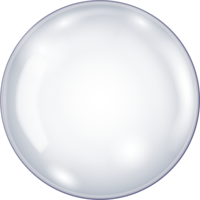
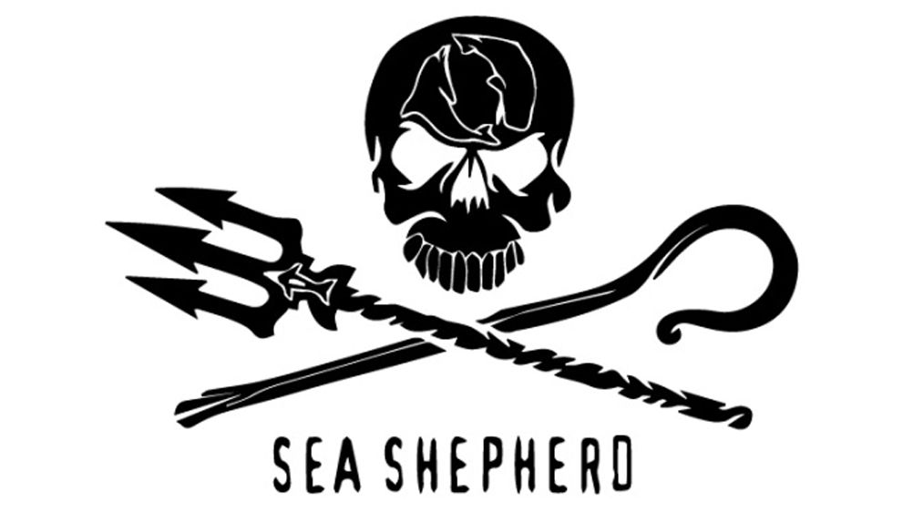
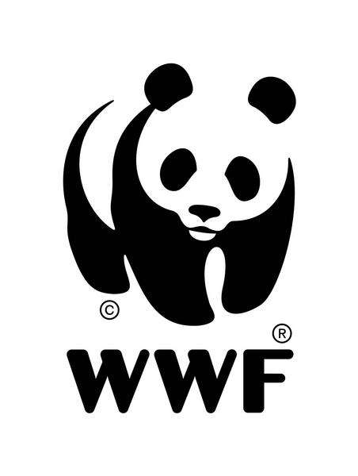
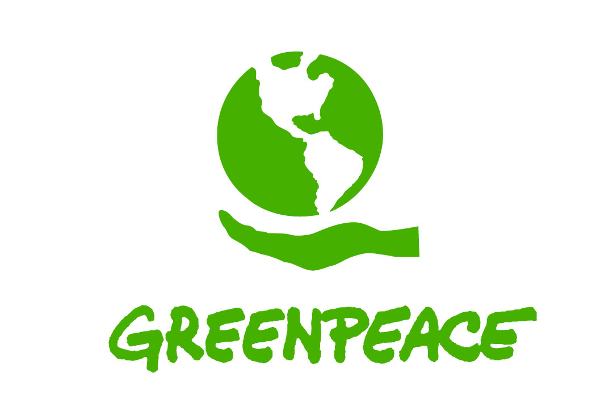
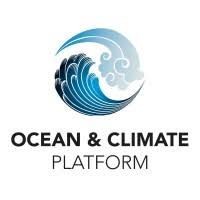
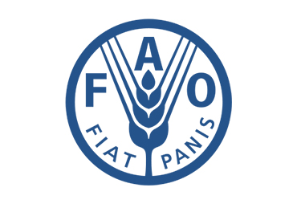
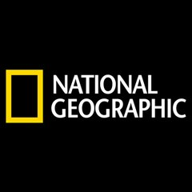
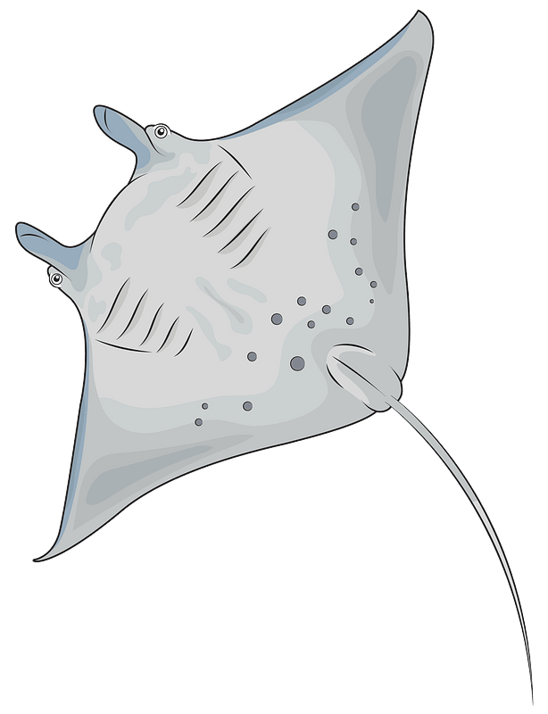

Sea Shepherd est une organisation engagée dans la protection des océans et la lutte contre la surpêche illégale.
Visiter Sea Shepherd

Le WWF travaille à la conservation de la nature et à la protection des espèces marines menacées à travers le monde.
Visiter WWF France

Greenpeace mène des actions directes pour la protection des océans et la lutte contre la pollution marine.
Visiter Greenpeace France

Ocean & Climate Platform informe sur les liens entre océans et changement climatique.
En savoir plus

La FAO fournit des données et rapports sur la pêche et la gestion durable des ressources marines.
Visiter FAO Fisheries

National Geographic propose des articles, vidéos et reportages sur la vie marine et les océans.
Découvrir National Geographic
